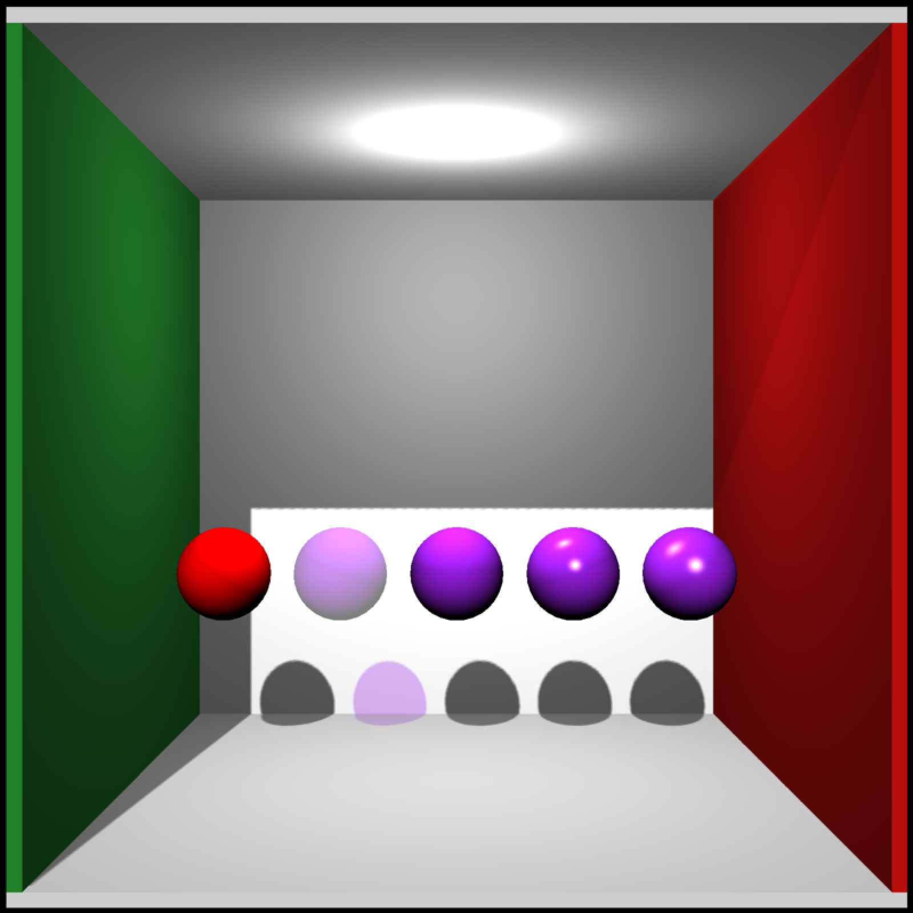

Change individual material properties, leaving others alone.
change_material(
mesh,
id = NULL,
sub_id = 1,
diffuse = NULL,
ambient = NULL,
specular = NULL,
transmittance = NULL,
emission = NULL,
shininess = NULL,
ior = NULL,
dissolve = NULL,
illum = NULL,
texture_location = NULL,
normal_texture_location = NULL,
bump_texture_location = NULL,
specular_texture_location = NULL,
ambient_texture_location = NULL,
emissive_texture_location = NULL,
diffuse_intensity = NULL,
bump_intensity = NULL,
specular_intensity = NULL,
emission_intensity = NULL,
ambient_intensity = NULL,
culling = NULL,
type = NULL,
translucent = NULL,
toon_levels = NULL,
toon_outline_width = NULL,
toon_outline_color = NULL,
reflection_intensity = NULL,
reflection_sharpness = NULL,
two_sided = NULL
)Mesh to change.
Default NULL. Either a number specifying the material to change, or a character vector
matching the material name.
Default 1. A number specifying which material to change (within an id).
Default NULL. The diffuse color.
Default NULL. The ambient color.
Default NULL. The specular color.
Default NULL. The transmittance
Default NULL. The emissive color.
Default NULL. The shininess exponent.
Default NULL. The index of refraction. If this is not equal to 1.0, the material will be refractive.
Default NULL. The transparency.
Default NULL. The illumination.
Default NULL. The diffuse texture location.
Default NULL. The normal texture location.
Default NULL. The bump texture location.
Default NULL. The specular texture location.
Default NULL. The ambient texture location.
Default NULL. The emissive texture location.
Default NULL. The diffuse intensity.
Default NULL. The bump intensity.
Default NULL. The specular intensity.
Default NULL. The emission intensity.
Default NULL. The ambient intensity.
Default NULL. The culling type. Options are back, front, and none.
Default NULL. The shader type. Options include diffuse,phong,vertex, and color.
Default NULL. Whether light should transmit through a semi-transparent material.
Default NULL. Number of color breaks in the toon shader.
Default NULL. Expansion term for model to specify toon outline width. Note: setting this property via this function currently does not generate outlines. Specify it during object creation.
Default NULL. Toon outline color.Note: setting this property via this function currently does not color outlines. Specify it during object creation.
Default NULL. Intensity of the reflection of the environment map, if present. This will be ignored if the material is refractive.
Default NULL. Sharpness of the reflection, where lower values have blurrier reflections. Must be greater than zero and less than one.
Default NULL. Whether diffuse materials should be two sided (normal is taken as the absolute value of the dot product of the light direction and the normal).
Shape with new material settings
if(rayvertex:::run_documentation()) {
p_sphere = sphere_mesh(position=c(555/2,555/2,555/2),
radius=40,material=material_list(diffuse="purple"))
generate_cornell_mesh() |>
add_shape(p_sphere) |>
add_shape(change_material(translate_mesh(p_sphere,c(200,0,0)),diffuse="red")) |>
add_shape(change_material(translate_mesh(p_sphere,c(100,0,0)),dissolve=0.5)) |>
add_shape(change_material(translate_mesh(p_sphere,c(-100,0,0)),type="phong")) |>
add_shape(change_material(translate_mesh(p_sphere,c(-200,0,0)),type="phong",shininess=30)) |>
rasterize_scene(light_info=directional_light(direction=c(0.1,0.6,-1)))
}
#> Setting default values for Cornell box: lookfrom `c(278,278,-800)` lookat `c(278,278,0)` fov `40` .
